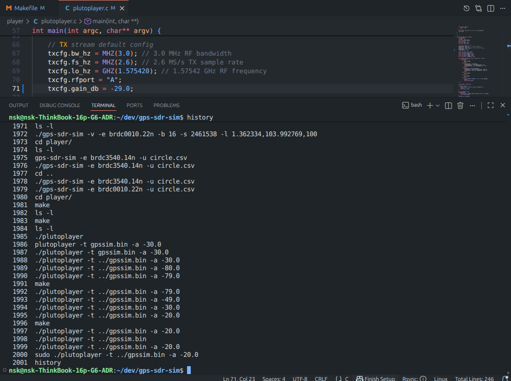

Имитация GNSS данных (Adalm Pluto SDR) и декодирование (USRP B200)
Имитация GNSS (Adalm Pluto)

Пример формирования GNSS-данных и излучения при помощи SDR Adalm Pluto.
Декодирование (USRP B200)
Установка зависимостей и компиляция
sudo apt install build-essential cmake git pkg-config libboost-dev libboost-date-time-dev \
libboost-system-dev libboost-filesystem-dev libboost-thread-dev libboost-chrono-dev \
libboost-serialization-dev liblog4cpp5-dev libuhd-dev gnuradio-dev gr-osmosdr \
libblas-dev liblapack-dev libarmadillo-dev libgflags-dev libgoogle-glog-dev \
libssl-dev libpcap-dev libmatio-dev libpugixml-dev libgtest-dev \
libprotobuf-dev libcpu-features-dev protobuf-compiler python3-mako
Настройка драйвера UHD для USRP B200
Проверить установленную версию UHD можно:
uhd_find_devices
Далее, вы увидите след. сообщение: [INFO] [UHD] linux; GNU C++ version 13.3.0; Boost_108300; UHD_4.9.0.0-0ubuntu1~noble3
Для работы с USRP B200 необходимо скачать драйвера (или образы) и поместить в директорию образов.
Скачать файлы образов для работы USRP B200 можно по ссылке здесь
sudo cp usrp_b200_fw.hex /usr/share/uhd/images/
sudo cp usrp_b200_fpga.rpt /usr/share/uhd/images/
sudo cp usrp_b200_fpga.bin /usr/share/uhd/images/
sudo cp usrp_b200_fw.hex /usr/share/uhd/<версия UHD>/images/
sudo cp usrp_b200_fpga.rpt /usr/share/uhd/<версия UHD>/images/
sudo cp usrp_b200_fpga.bin /usr/share/uhd/<версия UHD>/images/
Клонируем проект:
git clone https://github.com/gnss-sdr/gnss-sdr
Запуск
Конфиг файл USRP B200:
; This is a GNSS-SDR configuration file
; The configuration API is described at https://gnss-sdr.org/docs/sp-blocks/
; SPDX-License-Identifier: GPL-3.0-or-later
; SPDX-FileCopyrightText: (C) 2010-2020 (see AUTHORS file for a list of contributors)
; Configuration file for using USRP 1 as a RF front-end for GPS L1 signals.
; Run:
; gnss-sdr --config_file=/path/to/gnss-sdr_GPS_L1_USRP_realtime.conf
;
[GNSS-SDR]
;######### GLOBAL OPTIONS ##################
;internal_fs_sps: Internal signal sampling frequency after the signal conditioning stage [samples per second].
GNSS-SDR.internal_fs_sps=2000000
GNSS-SDR.telecommand_enabled=true
GNSS-SDR.telecommand_tcp_port=3333
;######### SUPL RRLP GPS assistance configuration #####
; Check https://www.mcc-mnc.com/
; On Android: https://play.google.com/store/apps/details?id=net.its_here.cellidinfo&hl=en
GNSS-SDR.SUPL_gps_enabled=true
GNSS-SDR.SUPL_read_gps_assistance_xml=true
GNSS-SDR.SUPL_gps_ephemeris_server=supl.google.com
GNSS-SDR.SUPL_gps_ephemeris_port=7275
GNSS-SDR.SUPL_gps_acquisition_server=supl.google.com
GNSS-SDR.SUPL_gps_acquisition_port=7275
GNSS-SDR.SUPL_MCC=250
GNSS-SDR.SUPL_MNC=1
GNSS-SDR.SUPL_LAC=0x59e2
GNSS-SDR.SUPL_CI=0x31b0
;######### SIGNAL_SOURCE CONFIG ############
SignalSource.implementation=UHD_Signal_Source
;SignalSource.device_address=192.168.40.2 ; <- PUT THE IP ADDRESS OF YOUR USRP HERE
SignalSource.item_type=gr_complex
SignalSource.sampling_frequency=2000000
SignalSource.freq=1575420000
SignalSource.gain=60
SignalSource.subdevice=A:A
SignalSource.samples=0
SignalSource.repeat=false
SignalSource.dump=false
SignalSource.dump_filename=./signal_source.dat
;######### SIGNAL_CONDITIONER CONFIG ############
SignalConditioner.implementation=Pass_Through
;######### CHANNELS GLOBAL CONFIG ############
Channels_1C.count=8
Channels_1B.count=0
Channels.in_acquisition=1
;#signal:
;# "1C" GPS L1 C/A
;# "1B" GALILEO E1 B (I/NAV OS/CS/SoL)
;# "1G" GLONASS L1 C/A
;# "2S" GPS L2 L2C (M)
;# "5X" GALILEO E5a I+Q
;# "L5" GPS L5
Channel.signal=1C
;######### ACQUISITION GLOBAL CONFIG ############
Acquisition_1C.implementation=GPS_L1_CA_PCPS_Acquisition
Acquisition_1C.item_type=gr_complex
Acquisition_1C.coherent_integration_time_ms=1
Acquisition_1C.threshold=0.01
;Acquisition_1C.pfa=0.0001
Acquisition_1C.doppler_max=50000
Acquisition_1C.doppler_step=250
Acquisition_1C.bit_transition_flag=false
Acquisition_1C.max_dwells=1
Acquisition_1C.dump=false
Acquisition_1C.dump_filename=./acq_dump.dat
;######### TRACKING GLOBAL CONFIG ############
Tracking_1C.implementation=GPS_L1_CA_DLL_PLL_Tracking
Tracking_1C.item_type=gr_complex
Tracking_1C.pll_bw_hz=30.0;
Tracking_1C.dll_bw_hz=4.0;
Tracking_1C.order=3;
Tracking_1C.early_late_space_chips=0.5;
Tracking_1C.dump=false
Tracking_1C.dump_filename=./tracking_ch_
;######### TELEMETRY DECODER GPS CONFIG ############
TelemetryDecoder_1C.implementation=GPS_L1_CA_Telemetry_Decoder
TelemetryDecoder_1C.dump=false
;######### OBSERVABLES CONFIG ############
Observables.implementation=Hybrid_Observables
Observables.dump=false
Observables.dump_filename=./observables.dat
;######### PVT CONFIG ############
;#implementation: Position Velocity and Time (PVT) implementation:
PVT.implementation=RTKLIB_PVT
PVT.positioning_mode=Single
PVT.output_rate_ms=100
PVT.display_rate_ms=1000
PVT.iono_model=Broadcast
PVT.trop_model=Saastamoinen
PVT.flag_rtcm_server=true
PVT.flag_rtcm_tty_port=false
PVT.rtcm_dump_devname=/dev/pts/1
PVT.rtcm_tcp_port=2101
PVT.rtcm_MT1019_rate_ms=5000
PVT.rtcm_MT1077_rate_ms=1000
PVT.rinex_version=2
PVT.enable_monitor=true
PVT.monitor_client_addresses=127.0.0.1
PVT.monitor_udp_port=1111
;######### MONITOR CONFIG ############
Monitor.enable_monitor=true
Monitor.decimation_factor=1
Monitor.client_addresses=127.0.0.1
Monitor.udp_port=1112
Запускаем:
cd build/src/main/
sudo ./gnss-sdr --config_file=gnss-sdr_GPS_L1_plutosdr_realtime.conf --log_dir=logs